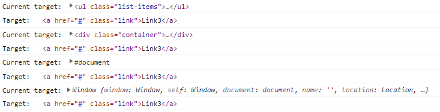
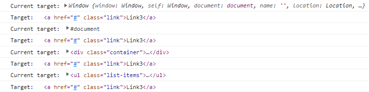

<button onclick="alert('Inline Js')">click me!</button>
<script> document.querySelectorAll(".btn").forEach((element, index) => { element.addEventListener("click", () => { alert("This is Button number "+index); }); }); </script>
<script src="./main.js"></script>
var greeter = "Hello"; var greeter = "Hey";
var greeting = "Hello"; greeting = "Hey";
let greeting = "Hello"; greeting = "Hey";
let greeting = "Hello"; let greeting = "Hey"; // error: Identifier 'greeting' has already been declared // if the same variable is defined in different scopes, there will be no error let greeting = "Hello"; if (true) { let greeting = "Hi"; console.log(greeting); // "Hi" } console.log(greeting); // "Hello"
const greeting = "Hello"; greeting = "Hey"; // error: Assignment to constant variable.
const greeting = "Hello"; const greeting = "Hey"; // error: Assignment to constant variable.
const greeting; // error: Missing initializer in constant declaration.
function add(num1, num2) { return num1 + num2; }
const addition = function add(num1, num2) { return num1 + num2; };
// anonymous function in javascript const addition = function (num1, num2) { return num1 + num2; }; //anonymous function as arrow function const addition = (num1, num2) => { return num1 + num2; };
const car = { make: "Dodge", model: "Challenger", year: 1970, colors: ["black", "red"], hybrid: false, drive: function () { console.log("driving..."); }, //ES6 syntax stop() { console.log("stopped!!!"); }, }; console.log(car.make); console.log(car.colors[0]); car.drive(); car.stop();
let number = 1; let number_2 = number; console.log(`number: ${number} and number_2: ${number_2}`); //number: 1 and number_2: 1 number_2 = 5; console.log(`number: ${number} and number_2: ${number_2}`); //number: 1 and number_2: 5
let person = { name: "ashutosh" }; let person_2 = person; console.log(`person name : ${person.name} and person_2 name: ${person_2.name}`); //person name : ashutosh and person_2 name: ashutosh person_2.name = "Ethan"; console.log(`person name : ${person.name} and person_2 name: ${person_2.name}`); //person name : Ethan and person_2 name: Ethan //ES6 Fix - we can use spread operator let person_3 = { ...person }; // not pointing to person but we are copying. person_3.name = "Ethan"; console.log(`person name : ${person.name} and person_3 name: ${person_3.name}`); //person name : ashutosh and person_3 name: Ethan
window object :- also knowns as browser api.
document - document is present inside window object alongside other object.
let res = document.querySelectorAll(".btn"); console.log(res); console.log(typeof res); // nodeList.forEach() is now standard and supported in all current browsers res.forEach((element) => { console.log(element); }); // ES6 allow you to do it in two more ways // let myArray = Array.from(NodeList); //let myArray = [...NodeList] // deconstructing; console.log([...res]); Array.from(res).forEach((element) => { console.log(element); }); let heading = document.getElementById("heading"); console.log(typeof heading); console.log(heading); console.log(heading.nodeName); console.log(heading.style); // provide all css declaration property . heading.style.backgroundColor = "red"; // set background as red for for heading.
let byTag = document.getElementsByTagName("h1"); console.log("tag", byTag); // before using forEach convert it to Array using ES6 syntax Array.from(byTag).forEach((element) => { console.log(element); }); let arrayValue = [...byTag]; console.log("arrayvalue:", arrayValue); arrayValue.forEach((element) => { console.log(element); });
<ul class="fruits"> <li>Apple</li> <li>Banana</li> <li>Orange</li> <li>Kiwi</li> <li>Mango</li> </ul>
const fruits = document.querySelector(".fruits"); const allChildNode = fruits.childNodes; // return (NodeList)all childNodes including whitespace which is treated as text node console.log(allChildNode); // NodeList(11) [text, li, text, li, text, li, text, li, text, li, text] const allChildren = fruits.children; // return(HTMLCollection) and only children console.log(allChildren); //HTMLCollection(5) [li, li, li, li, li]
<div id="main-heading"> <h1>Main Heading</h1> <div class="sub-heading"> <h2>Sub Heading</h2> </div> </div>
let subHeading = document.querySelector(".sub-heading"); console.log(subHeading); subHeading.style.color = "green"; let parent = subHeading.parentElement; console.log(parent); parent.style.color = "red";
previousSibling and nextSibling
previousElementSibling and nextElementSibling
nodeValue vs textContent
<div id="special">This is content value</div>
let special = document.querySelector("#special"); console.log(special.childNodes); console.log(special.childNodes[0].nodeValue); // accessing directly nodeValue will return null so we must use // childNodes[0] will be be text node // we can use firstChild as well. console.log(special.firstChild.nodeValue); // textContent will directly return value. console.log(special.textContent);
<div id="special">This is content value</div>
const special = document.querySelector("#special"); console.log(special.getAttribute("id")); special.setAttribute("class", "hello"); special.textContent = "this is updated content";
<!DOCTYPE html> <html lang="en"> <head> <meta charset="UTF-8" /> <meta http-equiv="X-UA-Compatible" content="IE=edge" /> <meta name="viewport" content="width=device-width, initial-scale=1.0" /> <title>Javascript Basics</title> <style> .changeColor { color: red; } .changeFontSize { font-size: 3rem; } </style> </head> <body> <h1 id="first">This is first element.</h1> <h1 id="second">This is second element.</h1> <h1 id="third">This is third element.</h1> <button id="btn">Click to toggle</button> </body> <script src="./main.js"></script> </html>
const first = document.querySelector("#first"); first.style.backgroundColor = "red"; first.style.color = "white"; first.style.fontSize = "3rem";
const first = document.querySelector("#first"); const second = document.querySelector("#second"); const third = document.querySelector("#third"); const btn = document.querySelector("#btn"); first.className = "changeColor"; first.className = "changeFontSize"; // this will override the changeColor class first.className = "changeColor changeFontSize"; // this will resolve the issue but not a best way to do things. // classList second.classList.add("changeColor"); second.classList.add("changeFontSize"); // This will not override changeColor class as it's adding in the list. second.classList.remove("changeColor"); // This will only remove changeColor class third.classList.add("changeFontSize"); btn.addEventListener("click", function (e) { console.log(e); console.log(this); // note if you use arrow function this will represent window and not button. third.classList.toggle("changeColor"); }); if (third.classList.contains("changeFontSize")) { console.log(`Third element contains changeFontSize class !!`); } else { console.log(`Third element doesn't contain changeFontSize class`); }
<div class="container"> <div class="main-heading">This is main heading</div> </div>
const container = document.querySelector(".container"); console.log(container.children); // HTMLCollection [div.main-heading] // create div element with class sub-heading let newDivElement = document.createElement("div"); // createTextNode let textNode = document.createTextNode("This is sub heading"); // append text node to element newDivElement.appendChild(textNode); // now add sub-heading class to new element newDivElement.classList.add("sub-heading"); // now append new element to container container.appendChild(newDivElement); console.log(container.children); // HTMLCollection(2) [div.main-heading, div.sub-heading]
const container = document.querySelector(".container"); const mainHeadingElement = document.querySelector(".main-heading"); console.log(container.children); // HTMLCollection [div.main-heading] // create div element with class sub-heading let newDivElement = document.createElement("div"); // createTextNode let textNode = document.createTextNode("This is sub heading"); // append text node to element newDivElement.appendChild(textNode); // now add sub-heading class to new element newDivElement.classList.add("sub-heading"); // now insert newDivElement before main heading container.insertBefore(newDivElement, mainHeadingElement); console.log(container.children); // HTMLCollection(2) [div.sub-heading, div.main-heading]
const container = document.querySelector(".container"); const mainHeadingElement = document.querySelector(".main-heading"); console.log(container.children); // HTMLCollection [div.main-heading] // create div element with class sub-heading let newContentElement = document.createElement("div"); // createTextNode let newTextNode = document.createTextNode( "This content has replaced old main heading" ); newContentElement.classList.add("updated-main-heading"); // append text node to element newContentElement.appendChild(newTextNode); container.replaceChild(newContentElement, mainHeadingElement); console.log(container.children); // HTMLCollection [div.updated-main-heading]
const container = document.querySelector(".container"); console.log(container.children); // HTMLCollection [div.main-heading] const mainHeadingElement = document.querySelector(".main-heading"); const dynamicElement = document.createElement("h2"); dynamicElement.innerText = `This is dynamic h2 heading`; container.prepend(dynamicElement); console.log(container.children); //HTMLCollection(2) [h2, div.main-heading]
<p>Hello</p> , use template string as it's more flexible.Hello<!DOCTYPE html> <html lang="en"> <head> <meta charset="UTF-8" /> <meta http-equiv="X-UA-Compatible" content="IE=edge" /> <meta name="viewport" content="width=device-width, initial-scale=1.0" /> <title>Javascript Basics</title> <style> .modified { color: red; font-size: 3rem; } a { display: inline-block; margin-top: 100vh; } </style> </head> <body> <div class="main-heading">Events in Javascript</div> <button id="btn">Click Me</button><br /> <a href="#">Random Link</a> </body> <script src="./main.js"></script> </html>
const heading = document.querySelector(".main-heading"); const btn = document.querySelector("#btn"); const link = document.querySelector("a"); btn.addEventListener("click", function (e) { console.log(e); console.log(e.currentTarget); console.log(e.type); e.currentTarget.classList.toggle("modified"); }); heading.addEventListener("click", function (e) { console.log(e.currentTarget); }); link.addEventListener("click", function (e) { console.log(e.preventDefault()); });
<!DOCTYPE html> <html lang="en"> <head> <meta charset="UTF-8" /> <meta http-equiv="X-UA-Compatible" content="IE=edge" /> <meta name="viewport" content="width=device-width, initial-scale=1.0" /> <title>Javascript Basics</title> </head> <body> <div class="container"> <ul class="list-items"> <li class="item"><a href="#" class="link">Link1</a></li> <li class="item"><a href="#" class="link">Link2</a></li> <li class="item"><a href="#" class="link">Link3</a></li> </ul> </div> </body> <script src="./main.js"></script> </html>
const container = document.querySelector(".container"); const list = document.querySelector(".list-items"); const showBubbling = function (e) { console.log("Current target:", e.currentTarget); console.log("Target:", e.target); }; const stopPropagation = function (e) { console.log("Current target:", e.currentTarget); console.log("Target:", e.target); e.stopPropagation(); }; container.addEventListener("click", showBubbling); list.addEventListener("click", showBubbling); //list.addEventListener("click", stopPropagation); document.addEventListener("click", showBubbling); window.addEventListener("click", showBubbling);
Output Event bubbling

const container = document.querySelector(".container"); const list = document.querySelector(".list-items"); const showBubbling = function (e) { console.log("Current target:", e.currentTarget); console.log("Target:", e.target); }; const stopPropagation = function (e) { console.log("Current target:", e.currentTarget); console.log("Target:", e.target); e.stopPropagation(); }; container.addEventListener("click", showBubbling, { capture: true }); list.addEventListener("click", showBubbling, { capture: true }); document.addEventListener("click", showBubbling, { capture: true }); window.addEventListener("click", showBubbling, { capture: true });
Output Event capturing

const container = document.querySelector(".container"); const btn = document.querySelector(".btn"); btn.addEventListener("click", function (e) { const element = document.createElement("h1"); element.classList.add("heading"); element.textContent = ` I am dynamic H1 tag`; container.appendChild(element); }); container.addEventListener("click", function (e) { if (e.target.classList.contains("heading")) { console.log("You have selected H1 tag by using event bubbling."); } });
<form action="" id="form"> <input type="text" id="name" /> <input type="password" id="password" /> <input type="submit" value="submit" /> </form>
const form = document.querySelector("#form"); const nameField = document.querySelector("#name"); const pwdField = document.querySelector("#password"); form.addEventListener("submit", function (e) { e.preventDefault(); // by default forms is submitted and page is refreshed , in that case we can't get value of field. console.dir(nameField); console.log(nameField.value); console.log(pwdField.value); });
localStorage.setItem("amount", "10"); const info = { name: "Ashutosh", age: 31, }; localStorage.setItem("info", JSON.stringify(info)); const value = JSON.parse(localStorage.getItem("info")); console.log(value); const friends = ["Sharon", "Ethan"]; localStorage.setItem("friends", JSON.stringify(friends)); const friendValue = JSON.parse(localStorage.getItem("friends")); console.log(friendValue); let fruits; if (localStorage.getItem("fruits")) { fruits = JSON.parse(localStorage.getItem("fruits")); } else { fruits = []; } console.log(fruits); fruits.push("apple"); localStorage.setItem("fruits", JSON.stringify(fruits));
const greet = function () { console.log("Hello"); }; setTimeout(greet, 2000); setTimeout(function () { console.log("Helllloooo"); }, 3000); const showScore = function (name, score) { console.log(`Hello ${name} , Your score is ${score}`); }; const firstId = setTimeout(showScore, 3000, "ashutosh", "85"); const secondId = setTimeout(showScore, 3000, "Sharon", "100"); console.log(firstId); console.log(secondId); clearTimeout(firstId);
const greet = function () { console.log("Hello"); }; setInterval(greet, 2000); setInterval(function () { console.log("Helllloooo"); }, 3000); const showScore = function (name, score) { console.log(`Hello ${name} , Your score is ${score}`); }; const firstId = setInterval(showScore, 3000, "ashutosh", "85"); const secondId = setInterval(showScore, 3000, "Sharon", "100"); console.log(firstId); console.log(secondId); clearInterval(firstId);
window.addEventListener("DOMContentLoaded", function () { // code }); // You can use document as well. document.addEventListener("DOMContentLoaded", function () { // code });
window.addEventListener("load", function () { // code }); // You can use document as well. document.addEventListener("load", function () { // code });
window.addEventListener("scroll", function () { console.log(window.scrollX + "px"); console.log(window.scrollY + "px"); });
const car = { make: "Bugatti", model: "Chiron", colors: ["Blue", "black"], hybrid: true, drive: () => { console.log("driving"); }, stop() { console.log("stopping"); }, }; console.log(car.make); console.log(car.colors[0]); car.drive(); car.stop(); //change value car.model = "veron"; // add new value; car.releaseYear = 2022; // delete delete car.hybrid; console.log(car);
// Nested object Example const age = 31; const address = "Bangalore"; let dynamicVariable = "favorite food"; // You can reassign the variable and use it .. not used regularly but you can find use case in react application. dynamicVariable = "job"; const person = { name: "ashutosh", // set variable as property value age: age, // es6 syntax if variable name is same as property name address, married: true, greet(name) { console.log(`Hello ${name}`); }, job: { title: "AEM developer", company: { name: "wipro", address: "bangalore", }, }, "random-value": "random text value", "favorite food": "Biryani", }; console.log(person.job.title); console.log(person.job.company.name); console.log(person); console.log(person["random-value"]); console.log(person[dynamicVariable]); console.log(person["age"]); console.log(person["job"]["title"]); console.log(person["job"]["company"]["name"]);
// This example const personalInfo = { firstName: "ashutosh", lastName: "shrivastava", fullName: function () { console.log(this); console.log(`My fullname is ${this.firstName} ${this.lastName}`); }, }; // left to the dot is personalInfo so this is pointing to personalInfo object personalInfo.fullName(); personalInfo["firstName"] = "sharon"; personalInfo["lastName"] = "prittina"; personalInfo.fullName();
function showThis() { console.log(this); } const ashutosh = { name: "Ashutosh Shrivastava", showThis: showThis, }; // this inside showThis will point to ashutosh ashutosh.showThis(); // this inside showThis will point to window showThis(); const btn = document.querySelector(".btn"); // this inside showThis will point to btn btn.addEventListener("click", showThis); btn.addEventListener("click", function () { // this inside showThis will point to window showThis(); });
// Factory function function createPerson(firstName, lastName) { return { firstName: firstName, lastName: lastName, fullName: function () { console.log(this); console.log(`My fullname is ${this.firstName} ${this.lastName}`); }, }; } const ashu = createPerson("ashutosh", "shrivastava"); ashu.fullName(); const ethan = createPerson("Ethan Shaurya", "Shrivastava"); ethan.fullName();
// Constructor function Person(firstName, lastName) { this.firstName = firstName; this.lastName = lastName; this.fullName = function () { console.log( `My fullname is ${this.firstName} ${this.lastName} and i love JS` ); }; console.log(this); } const leo = new Person("Leo", "Messi"); console.log(leo.constructor); // points to function Person // Using leo constructor which actually points to Person to create xavi object , not typically used but good to know. const xavi = new leo.constructor("xavi", "hernandez"); xavi.fullName(); const neymar = {}; console.log(neymar.constructor); // ƒ Object() { [native code] } const list = []; console.log(list.constructor); //ƒ Array() { [native code] } const sayHi = function () {}; console.log(sayHi.constructor); // ƒ Function() { [native code] }
// Prototypal Property function Account(name, initialBalance) { this.name = name; this.balance = initialBalance; this.bank = "HSBC"; // instead of creating method as a part of instance define in prototype. // this.deposit = function (amount) { // this.balance += amount; // console.log(`Hello ${this.name}, your balance is ${this.balance}`); // }; } Account.prototype.bank = "HDFC"; Account.prototype.deposit = function (amount) { this.balance += amount; console.log(`Hello ${this.name}, your balance is ${this.balance}`); }; // when you create instance you don't copy methods but have access to them bcoz they are stored in prototype. const robin = new Account("robin", 1000); const zee = new Account("Zee", 0); console.log(robin); // this will return HSBC because instance of bank property but if property is not present in instance then it will look up in parent prototype. console.log(robin.bank); robin.deposit(500); zee.deposit(5000); //object :- in console you can see that you have prototype where all methods are stored. console.log({}); //array :- in console you can see that you have prototype where all methods are stored. console.log([]);
class Account { constructor(name, initialBalance) { this.name = name; this.balance = initialBalance; } bank = "HSBC"; deposit(amount) { this.balance += amount; console.log(`Hello ${this.name}, your balance is ${this.balance}`); } } const robin = new Account("robin", 1000); console.log(robin); console.log(robin.initialBalance); robin.deposit(500); const zee = new Account("zee", 0); console.log(zee); console.log(zee.bank); zee.deposit(2000);
// call const ashu = { name: "ashutosh", age: 24, greet: function (city, country) { console.log(this); console.log( `Hi, I am ${this.name} and i am ${this.age} old and i live in ${city},${country}` ); }, }; const sharon = { name: "sharon", age: 24, }; function greet(city, country) { console.log(this); console.log( `Hello, I am ${this.name} and i am ${this.age} years old and i live in ${city},${country}` ); } greet.call(ashu, "Bangalore", "India"); greet.call(sharon, "Bangalore", "India"); greet.call({ name: "ethan", age: 3 }, "Bangalore", "India"); // calling greet of ashu but passing sharon object ashu.greet.call(sharon, "Bangalore", "India");
//Apply example const ashu = { name: "ashutosh", age: 24, greet: function (city, country) { console.log(this); console.log( `Hi, I am ${this.name} and i am ${this.age} old and i live in ${city},${country}` ); }, }; const sharon = { name: "sharon", age: 24, }; function greet(city, country) { console.log(this); console.log( `Hello, I am ${this.name} and i am ${this.age} years old and i live in ${city},${country}` ); } greet.apply(ashu, ["Bangalore", "India"]); greet.apply(sharon, ["Bangalore", "India"]); greet.apply({ name: "ethan", age: 3 }, ["Bangalore", "India"]); // calling greet of ashu but passing sharon object ashu.greet.apply(sharon, ["Bangalore", "India"]);
// Bind example const ashu = { name: "ashutosh", age: 24, greet: function (city, country) { console.log(this); console.log( `Hi, I am ${this.name} and i am ${this.age} old and i live in ${city},${country}` ); }, }; const sharon = { name: "sharon", age: 24, }; function greet(city, country) { console.log(this); console.log( `Hello, I am ${this.name} and i am ${this.age} years old and i live in ${city},${country}` ); } // assign and call it later const sharonGreet = greet.bind(sharon, "Bangalore", "India"); sharonGreet(); const sharonGreetTwo = ashu.greet.bind(sharon, "Coimbatore", "India"); sharonGreetTwo();
const counter = { count: 0, increment() { console.log(this); this.count++; console.log(this.count); }, }; const btn = document.querySelector(".increment"); // fail because this is pointing to btn //btn.addEventListener("click", counter.increment); // some edge cases -- if we remove addEventListener then we will not have reference to increment function. //btn.addEventListener("click", counter.increment.bind(counter)); // Will always work. const incrementValue = counter.increment.bind(counter); btn.addEventListener("click", incrementValue); btn.removeEventListener("click", incrementValue);
const num1 = 30; const num2 = 20; function add() { console.log(`Add value is ${num1 + num2}`); } add(); // IIFE // Anonymous function 1 invoking directly by wrapping in () and adding () at the end. (function (a, b) { const num3 = 30; const num4 = 20; console.log(`Add value is ${num3 + num4}`); })(); // Anonymous function 2 with passing argument (function (a, b) { console.log(`Add value is ${a + b}`); })(40, 50); // return result Anonymous function 3 with passing argument const result = (function (a, b) { return a + b; })(100, 50); console.log(result);
display(); complexFunc(); // this will throw error as firstName and lastName can't be referenced here. console.log(age); // undefined //console.log(firstNname); // Cannot access 'firstNname' before initialization //console.log(lastName); //Cannot access 'lastName' before initialization const firstNname = "Ashutosh"; let lastName = "Shrivastava"; // This can be called even before declaration bcoz when class will run javascript will put this at the start of the file but will be undefined. var age = 31; console.log(age); // 31 console.log(firstNname); //Ashutosh console.log(lastName); //Shrivastava function display() { console.log( `This function can be called even before declaration bcoz when class will run javascript will put this at the start of the file before anything else` ); } function complexFunc() { console.log(`Hello your name is ${firstNname} ${lastName}`); } complexFunc(); // This will work properly.
function outer() { let privateVar = "XXXXXX"; function inner() { console.log(`From Inner function and secret value is ${privateVar}`); } return inner; } //console.log(privateVar); // This will throw error as it's out of scope. console.log(outer()); // This will return signature of inner function console.log(outer()()); // This will execute inner function and will have access to privateVar. const value = outer(); console.log(value); // This will return signature of inner function console.log(value()); // This will execute inner function and will have access to privateVar.
Basic example
function newAccount(name, initialBalance) { let balance = initialBalance; function showBalance() { console.log(`Hey ${name}, your balance is ${balance}`); } return showBalance; } newAccount("ashutosh", 500)(); const ethan = newAccount("Ethan", 1000); const sharon = newAccount("Sharon", 1500); ethan(); sharon(); // Note:- for each instance of newAccount is created showBalance remembers what was the value when newAccount was invoked.
Complete example
function newAccount(name, initialBalance) { let balance = initialBalance; function showBalance() { console.log(`Hey ${name}, your balance is ${balance}`); } function deposit(amount) { balance += amount; showBalance(); } function withdraw(amount) { if (amount > balance) { console.log(`Hey ${name}, Not enough funds`); return; } else { balance -= amount; showBalance(); } } /*return method instead of function by converting it to object. */ return { showBalance: showBalance, deposit: deposit, withdraw: withdraw }; } const ethan = newAccount("Ethan", 1000); const sharon = newAccount("Sharon", 1500); ethan.showBalance(); ethan.deposit(500); sharon.showBalance(); sharon.withdraw(1000); /* Note:- for each instance of newAccount is created showBalance remembers what was the value when newAccount was invoked. */
// defining variable var greeter = "Hello"; // re defining var greeter = "Hey";
var greeting = "Hello"; // updating variable greeting = "Hey";
var greeting = "Hello"; if (true) { var greeting = "Hi"; // if defined as var it will change the value outside block scoped as well. console.log(greeting); // "Hi" } console.log(greeting); // "Hi"
let greeting = "Hello"; greeting = "Hey";
let greeting = "Hello"; let greeting = "Hey"; // error: Identifier 'greeting' has already been declared // if the same variable is defined in different scopes, there will be no error let greeting = "Hello"; if (true) { let greeting = "Hi"; console.log(greeting); // "Hi" } console.log(greeting); // "Hello"
const greeting = "Hello"; greeting = "Hey"; // error: Assignment to constant variable.
const greeting = "Hello"; const greeting = "Hey"; // error: Assignment to constant variable.
const greeting; // error: Missing initializer in constant declaration.
const person = { name: "ashutosh", }; person.name = "ethan"; // it's object or array we can change the value. console.log(person.name);
const greeting = "Hello"; if (true) { const greeting = "Hi there"; console.log(greeting); // "Hi there" } console.log(greeting); // "Hello"
const firstName = "Ashutosh"; const lastName = "Shrivastava"; const age = 31; const phrase = `My full name is ${firstName} ${lastName} and I'm ${age} years old`; const phrase2 = `My full name is ${firstName.toUpperCase()} ${lastName.toUpperCase()} and I'm ${age} years old`; console.log(phrase); // My full name is Ashutosh Shrivastava and I'm 31 years old
const person = { name: "ashutosh", job: "devloper", hobbies: ["cooking", "football"], }; const result = document.getElementById("result"); result.innerHTML = ``;
const firstName = "Ashutosh"; const lastName = "Shrivastava"; const age = 31; const phrase = highlight`My full name is ${firstName} ${lastName} and I am ${age} years old.`; const result = document.getElementById("result"); result.innerHTML = ``; // use spread operator ... args , it will copy all the variables so we don't have do define arg1,arg2 if there are multiple. function highlight(text, ...args) { console.log({ text, args }); const result = text.map((item, index) => { return `${item} <strong class='taggedClass'>${args[index] || ""}</strong>`; }); return result; }
// if one line then no need of {} or return const sayHello = () => console.log("Hello"); sayHello(); // if one param we can remove () // one line code will have implicit return so it will always return even without writing return. const double = (value) => value * 2; const res = double(5); console.log(res); // Two params and more than one line const multiply = (num1, num2) => { const res = num1 * num2; // more code; return res; }; console.log(multiply(5, 6)); // return object without return keyword then you can wrap in () const obj = () => ({ name: "Ashutosh", age: "31" }); console.log(obj()); // return object with return keyword const obj2 = () => { return { name: "Sharon", age: "31" }; }; const person = obj2(); console.log(person); // Call back function with anonymous arrow functions. // filter method. // add eventlistener const number = [1, 2, 3, 4, 5, 6, 7, 8, 9, 10]; const big = number.filter((number) => number > 5); console.log(big); const small = number.filter((number, index) => { console.log(index); return number < 5; }); console.log(small); const btnElement = document.querySelector(".btn"); btnElement.addEventListener("click", (e) => { console.log(e.target); });
const ashu = { name: "Ashutosh", age: 24, greet: function () { const self = this; setTimeout(function () { /* this will refer to window as in call back function after 2 sec this refers to window (parent) . */ /* We can solve this by using self */ console.log(this); console.log(`Hello from ${self.name}`); }, 2000); }, }; const ethan = { name: "Ethan", age: 3, greet: function () { const self = this; setTimeout(() => { // current surrounding scope is ethan for this. console.log(this); console.log(`Hola from ${this.name}`); }, 2000); }, }; const sharon = { name: "Sharon", age: 24, greet: () => { console.log(this); console.log(`Hello from ${this.name}`); }, }; ashu.greet(); sharon.greet(); ethan.greet();
const fruits = ["orange", "banana", "lemon"]; const friends = ["nitish", "abhishek", "nilay"]; // destructuring const [f1, f2, f3, f4] = friends; // return undefined if it's out of index. console.log(f1, f2, f3, f4); // nitish abhishek nilay undefined // for skipping value just add "," const [fr1, , fr2] = friends; console.log(fr1, fr2); /* Swap value */ let first = "ashutosh"; let second = "Sharon"; console.log(first, second); // swapping value using destructuring . [second, first] = [first, second]; console.log(first, second);
/* Object Destructuring */ const ashutosh = { fname: "ashutosh", age: 31, city: "Bangalore", siblings: { sister: ["A", "B", "C"], brother: ["D", "E", "F"], }, parents: { father: "Sachida", mother: "Usha", }, JobDetails: ["Accenture", "Sapient", "Wipro"], }; const { fname: first, age, city, zip, siblings: { sister: [a, b], brother: favBro, }, parents: { father: FATHER, mother: MOTHER }, JobDetails: [firstCompany, SecondCompany], } = ashutosh; console.log( first, age, city, zip, favBro, FATHER, MOTHER, firstCompany, SecondCompany, a, b );
const ashutosh = { fname: "ashutosh", age: 31, city: "Bangalore", siblings: { sister: ["A", "B", "C"], brother: ["D", "E", "F"], }, parents: { father: "Sachida", mother: "Usha", }, JobDetails: ["Accenture", "Sapient", "Wipro"], }; function printPerson({ fname: first, age, city, zip, siblings: { sister: [a, b], brother: favBro, }, parents: { father: FATHER, mother: MOTHER }, JobDetails: [firstCompany, SecondCompany], }) { console.log( "Values are", first, age, city, zip, favBro, FATHER, MOTHER, firstCompany, SecondCompany, a, b ); } printPerson(ashutosh);
const person = "Ashutosh Shrivastava"; const employee = "20052220-EMP-ASHUTOSH-SHRIVASTAVA"; const manager = "20062220-MAN-SHARON-SHRIVASTAVA"; // startsWith console.log(person.startsWith("Ash")); console.log(employee.startsWith("EMP", 9)); //endsWith console.log(manager.endsWith("SHRIVASTAVA")); console.log(manager.endsWith("MAN", 12)); //includes console.log(employee.includes("EMP")); //repeat const rep = (person, amount = 2) => { return person.repeat(amount); }; const res = rep(person, 3); console.log(res);
const fruits = ["Apple", "Banana", "orange", "kiwi"]; const longName = "Ashutosh Shrivastava aka ASHU"; let shortName = ""; for (const iterator of longName) { // console.log(iterator); if (iterator === " ") { continue; } else { shortName += iterator; } } console.log(shortName); for (const iterator of fruits) { if (iterator === "orange") { break; } console.log(iterator); }
const person = { fname: "ashutosh", lname: "shrivatsava", job: "developer" }; // for (const iterator of person) { // console.log(iterator); // } for (const key in person) { if (Object.hasOwnProperty.call(person, key)) { const element = person[key]; console.log(element); } } const fruits = ["Apple", "Banana", "orange", "kiwi"]; for (const index in fruits) { console.log(`Index- ${index}: Value - ${fruits[index]}`); } // It's easy to use for of. for (const iterator of fruits) { console.log(iterator); }
const nameVal = "ASHUTOSH SHRIVASTAVA"; const letters = [...nameVal]; console.log(letters); const boys = ["Ashu", "Diwakar", "Ethan", "Karthik", "Sachida"]; const girls = ["Sharon", "Khushboo", "Usha"]; const random = "random"; const res1 = [...boys, ...girls, random]; console.log(res1); const res2 = [...boys, random, ...girls]; console.log(res2); // don't assign as it reference same and it's mutate the array. //const newArray = res2; // instead copy them and make modification const newArray = [...res2]; newArray[0] = "XYZ"; // it will affect res2 as well. console.log(newArray); console.log(res2);
const person = { name: "Ashutosh", job: "developer", }; /* If property is not there it will be added , if property is there it will be overridden */ const newPerson1 = { ...person }; const newPerson2 = { ...person, city: "Bangalore", name: "Ethan" }; console.log(newPerson1); console.log(newPerson2); console.log(person);
<body> <h1>Item1</h1> <h1>Item2</h1> <h1>Item3</h1> <h1>Item4</h1> <h1>Item5</h1> <h2 id="result"></h2> </body>
const h1Elements = document.querySelectorAll("h1"); const res = document.querySelector("#result"); const arrayValue = [...h1Elements]; console.log(arrayValue); const resultText = arrayValue .map((item) => { return `<span>${item.textContent}</span>`; }) .join(""); res.innerHTML = resultText;
const number = [10, 20, 40, 50, 60]; console.log(Math.max(...number)); const person = ["Ashutosh", "Shrivastava"]; const greet = (fname, lname) => { console.log(`Hello ${fname} ${lname}`); }; greet(...person);
// Arrays const fruits = ["Apple", "Orange", "Kiwi", "banana", "pear"]; const [first, ...restFruits] = fruits; console.log(first, restFruits);
// objects const person = { fname: "ashutosh", lname: "shrivatsava", job: "developer" }; const { job, ...restPerson } = person; console.log(job, restPerson);
const testScores = [80, 90, 75, 100, 85]; const getAvg = (name, ...scores) => { // const total = scores.reduce((acc, curr) => { // return (acc += curr); // }, 0); let total = 0; // scores.forEach((item) => { // total += item; // }); for (const iterator of scores) { total += iterator; } console.log(total); console.log(`Hi ${name}, Your average score is ${total / scores.length}`); }; getAvg(person.fname, 100, 200, 300, 400, 500); getAvg("Sharon", ...testScores); // Using spred operator as argument
const testArray = Array.of("Ashu", 31, true); console.log(testArray);
const nameVal = "Ashutosh"; console.log(Array.from(nameVal)); function countTotal() { //arguments is a keyword. //console.log(arguments); let arrayVal = Array.from(arguments); console.log(arrayVal); let total = 0; for (const iterator of arrayVal) { total += iterator; } console.log(total); } countTotal(10, 20, 30, 40, 50);
const h1Elements = document.querySelectorAll("h1"); const res = document.querySelector("#result"); const second = document.querySelector("#second"); const arrayValue = Array.from(h1Elements); console.log(arrayValue); //longer approach const resultText = arrayValue .map((item) => { return `<span>${item.textContent}</span>`; }) .join(""); res.innerHTML = resultText; //shorter approach const secondTextVal = Array.from(document.querySelectorAll("h1"), (item) => { //console.log(item); return `<span>${item.textContent}</span>`; }).join(""); console.log(secondTextVal); second.innerHTML = secondTextVal;
const people = [ { id: 1, name: "ashutosh" }, { id: 2, name: "sharon" }, { id: 3, name: "ethan" }, { id: 4, name: "samual" }, ]; // filter return an array object. const testFilter = people.filter((item) => item.name.startsWith("s")); console.log(testFilter); // two items return sharon and samual. // return single item which is matched first . const testFind = people.find((item) => item.name.startsWith("s")); console.log(testFind); // sharon object return. const testFindIndex = people.findIndex((item) => item.id === 3); console.log(testFindIndex); const newPeople = people.slice(0, testFindIndex); console.log(newPeople);
const grades = ["A", "B", "A", "B", "C"]; const goodGrades = ["A", "B", "A", "B"]; const testEvery = grades.every((item) => item !== "C"); console.log(testEvery); const testSome = goodGrades.some((item) => item === "A"); console.log(testSome);
Object.keys() - converts property names in to array.
Object.values() - converts property values in to array.
Object.entries() - converts property names and property values in to array
const person = { fname: "ashutosh", lname: "shrivatsava", job: "developer" }; const keysArray = Object.keys(person); console.log(keysArray);
const person = { fname: "ashutosh", lname: "shrivatsava", job: "developer" }; const valuesArray = Object.values(person); console.log(valuesArray);
const person = { fname: "ashutosh", lname: "shrivatsava", job: "developer" }; const entriesArray = Object.entries(person); console.log(entriesArray); // map method. const mapRes = entriesArray.map((item) => { const [first, second] = item; //return first; // return keys in array. return second; // return values in array. }); console.log(mapRes); // nested for of. for (const item of entriesArray) { for (const iterator of item) { console.log(iterator); } } // using destructing -- for of. for (const [first, second] of entriesArray) { console.log(first, second); }
const unique = new Set(); // add(values) let random = "third"; unique.add("first"); unique.add("second"); unique.add(random); unique.add("fourth"); console.log(unique); // create array using Array from , we can use spread operator as well.. console.log(Array.from(unique)); console.log([...unique]); // delete const res = unique.delete(random); console.log(res); // true console.log(unique); const isValue = unique.has("fourth"); console.log(isValue); // true //Iterator //entries() console.log(unique.entries()); console.log(unique.keys()); console.log(unique.values()); unique.forEach((element) => { console.log(element); }); // clear() const res2 = unique.clear(); console.log(res2);
const menu = [ { id: 1, title: "buttermilk pancakes", category: "breakfast", }, { id: 2, title: "diner double", category: "lunch", }, { id: 3, title: "godzilla milkshake", category: "shakes", }, { id: 4, title: "country delight", category: "breakfast", }, { id: 5, title: "egg attack", category: "lunch", }, { id: 6, title: "oreo dream", category: "shakes", }, { id: 7, title: "bacon overflow", category: "breakfast", }, { id: 8, title: "american classic", category: "lunch", }, { id: 9, title: "quarantine buddy", category: "shakes", }, { id: 10, title: "pan-seared steak", category: "dinner", }, ]; // const categories = menu.map((item) => item.category); // console.log(categories); // const uniqueCategories = new Set(categories); // console.log(uniqueCategories); // const finalCategories = ["all", ...uniqueCategories]; // console.log(finalCategories); const res = ["all", ...new Set(menu.map((item) => item.category))]; console.log(res); // ['all', 'breakfast', 'lunch', 'shakes', 'dinner']
const fName = "Ashutosh"; const res1 = fName.includes("A"); const res2 = fName.includes("A", 1); // staring postion to check. console.log(res1); //true console.log(res2); //false const product = [ { title: "Modern Poster" }, { title: "Bar Stool" }, { title: "Armchair" }, { title: "Leather Chair" }, ]; const searchTerm = "a"; const result = product.filter((product) => product.title.toLowerCase().includes(searchTerm) ); console.log(result);
const groceries = ["lemon", "eggs", "orange", "milk"]; let searchText = "lemon"; const res1 = groceries.includes(searchText); console.log(res1); // true const res2 = groceries.includes(searchText, 1); console.log(res2); // false if (groceries.includes(searchText)) { console.log(`Yes the search item ${searchText} is present in an array`); } else { console.log(`No the search item ${searchText} is not present in an array`); }
Javascript is single thread ,synchronous language.
run code line by line. if it's takes time to get response it will block the code execution.
Asyncronous code will take the function out of normal flow and return the result later once task is done without stopping next line of code. (setTimeout)
BROWSER- Fetch Data, Get Geolocation, setTimeout, setTimer
callbacks,callback hell
promise
async/await
callbacks
console.log("i am first"); console.log("i am second"); console.log("i am third"); printCount(); console.log("i am fourth"); function printCount() { console.log("Counting start"); for (let i = 0; i <= 10000; i++) { console.log("Counting"); } console.log("Counting end"); }
console.log("i am first"); console.log("i am second"); console.log("i am third"); printCount(6000); console.log("i am fourth"); function printCount(time) { console.log("Counting start"); setTimeout(() => { console.log("counting done"); }, time); }
// Time passed in setTimeout is minimum time not exact time. printCount(0); console.log("continue with next line"); // once for loop finished then only callback function of settimeout can be executed. for (let index = 0; index < 1000; index++) { console.log("Running For loop"); } function printCount(time) { console.log("Counting start"); setTimeout(() => { console.log("counting done"); }, time); }
// Make Soup // boil water 10 min // chop carrots // add carrots boil for 5 min // chop onion // add onion boil for 5 min // BROWSER!!!!! Fetch Data, Get Geolocation, setTimeout, setTimer etc // callbacks, promises, async/await boilWater(); console.log(`chop carrot`); function boilWater() { console.log("boiling started..."); setTimeout(() => { console.log("boiling for 10 min is done."); console.log("add carrots and let it boil for 5 min."); setTimeout(() => { console.log("carrots boiled for 5 min and it's ready"); console.log("add onions and and let it boil for 5 min."); setTimeout(() => { console.log("onion boiled for 5 min and it's ready"); }, 5000); }, 5000); console.log("chop onion"); }, 10000); }
<h1>Asynchronous Javascript</h1> <h1 class="one">hello world</h1> <h1 class="two">hello people</h1> <h1 class="three">hello Javascript</h1> <button class="btn">click me</button> <script src="./app.js"></script>
const heading1 = document.querySelector(".one"); const heading2 = document.querySelector(".two"); const heading3 = document.querySelector(".three"); const btn = document.querySelector(".btn"); btn.addEventListener("click", () => { setTimeout(() => { heading1.style.color = "red"; setTimeout(() => { heading2.style.color = "green"; setTimeout(() => { heading3.style.color = "blue"; }, 1000); }, 2000); }, 1000); });
const heading1 = document.querySelector(".one"); const heading2 = document.querySelector(".two"); const heading3 = document.querySelector(".three"); const btn = document.querySelector(".btn"); btn.addEventListener("click", () => { changeColor(heading1, "red", 1000) .then(() => changeColor(heading2, "green", 2000)) .then(() => changeColor(heading3, "blue", 1000)) .catch((err) => console.log(err)); }); function changeColor(element, color, time) { return new Promise((resolve, reject) => { if (element) { setTimeout(() => { element.style.color = color; resolve(); }, time); } else { reject(new Error(`There is no such element :${element} `)); } }); }
const heading1 = document.querySelector(".one"); const heading2 = document.querySelector(".two"); const heading3 = document.querySelector(".three"); const btn = document.querySelector(".btn"); btn.addEventListener("click", async () => { // directly calling as promise. // displayColor().then((res) => console.log(res)); // using await as we have async as function. const res = await displayColor(); console.log(res); }); async function displayColor() { try { await changeColor(heading1, "red", 3000); await changeColor(heading2, "green", 4000); await changeColor(heading3, "blue", 5000); console.log("Code executed after all promise is settled"); } catch (error) { console.log(error); } return " returning promise"; } function changeColor(element, color, time) { console.log(element, color, time); return new Promise((resolve, reject) => { if (element) { setTimeout(() => { element.style.color = color; resolve(); }, time); } else { reject(new Error(`There is no such element :${element} `)); } }); }